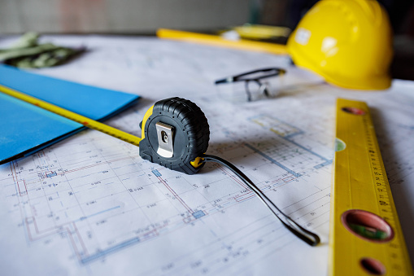
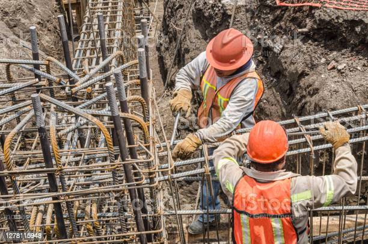
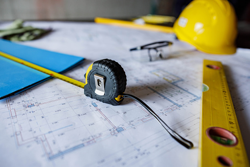
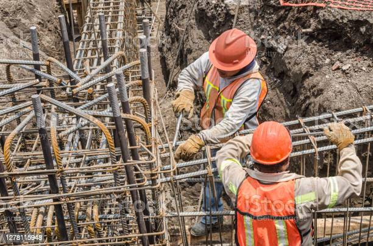

Quienes somos
Ingeniería y Construcciones de Nicaragua S.A.es una empresa
constructora con más de 15 años de experiencia en el rubro, nos hemos establecido en Managua, sin embargo, trabajamos por todo el país de Nicaragua, somos especialistas en variedad de servicios, tales como: diseño, construcción de obras verticales, obras menores horizontales, venta de materiales, alquiler equipo menor de construcción y mucho más.
Uno de nuestros principios es la excelencia, esto lo logramos diseñando y construyendo proyectos civiles con las normas establecidas en el país, también usando productos de calidad y con un equipo de profesionales y técnicos altamente capacitados, preparados para asesorar a nuestros clientes, dándole opciones seguras, duraderas y estéticas de acuerdo al sitio que corresponda.
Sobre nosotros
INCONICSA tiene una gran variedad de servicios constructivos que van desde: diseño arquitectónico, diseño estructural, diseño hidrosanitario, diseño vial, diseño eléctrico y diseño de impacto ambiental, supervisión y construcción de obras verticales y obras menores horizontales, contamos con un área de venta de materiales de construcción y más.
Tenga la seguridad que nuestro equipo de trabajo cuenta con vasta experiencia para realizar diseños y ejecutar proyectos de diferentes tipos ya sea en movimientos de tierra, en infraestructuras vertical como son: edificios comerciales, residenciales, tratamiento de agua potable y tratamiento de aguas grises, y también trabajamos en infraestructura horizontal menor como: obras hidráulicas menores, instalación de red de tuberías de abastecimiento de agua potable, aguas negras, puente vado, adoquinados, reparación de carpeta asfáltica, tratamientos víal para calles y caminos.
Con INCONICSA tendrá excelentes resultados a precios accesibles con técnicas seguras, duraderas y embellecedoras a su ambiente, cotice con nosotros y con gusto le haremos una estimación gratis, de tal forma que usted opte por nuestro servicio.
Visión
Ser la compañia líder en brindar servicios de diseño arquitectónico, estructural, hidrosanitario, ambiental y eléctrico, supervisión, construcción o remodelación de obras verticales y obras menores horizontales de toda Nicaragua, con un gran equipo de técnicos dispuestos a trabajar para que nuestros clientes hablen de nosotros como una referencia de excelencia y profesionalismo.
Misión
Proveer a nuestros clientes con los mejores proyectos civiles para que su inversión sea satisfactoria, garantizando un excelente trabajo con personal altamente calificado y sobre todo con precios accesibles para diseñar, supervisar, construir, remodelar o acondicionar sus negocios, residencia, empresas ó fincas cumpliendo con las normas constructivas establecidas en Nicaragua.
Valores
Seguridad, profesionalismo, humanismo, compromiso, responsabilidad.
Nuestros servicios

Diseño
Como especialistas en arquitectura ingeniería civil e ingeniería eléctrica, podemos realizar una gran variedad de diseños, estos son: diseño arquitectónico, diseño estructural, diseño hidrosanitario, diseño vial, diseño eléctrico y diseño de impacto ambiental, pues contamos con profesionales certificados en cada una de las áreas antes descritas, nosotros asesoramos al cliente y elaboramos el diseño que más le convenga de acuerdo a la situación.
Llámenos y consúltenos su necesidad, con gusto llegamos hasta el sitio de su proyecto y le haremos la estimación correspondiente totalmente gratis.
Supervisión de obras civiles
Nuestra empresa cuenta con personal calificado para realizar supervisión de obras civiles ya sea en infraestructura vertical como horizontal, asimismo darles seguimiento a los diseños elaborados por INCONICSA.
Nos encargamos de hacer las funciones administrativas de la dirección y del control, así como revisar que el trabajo sea realizado de acuerdo a lo establecido en planos y especificaciones constructivas para cumplir con los objetivos del proyecto.

Construcción de obras verticales
De igual manera, la empresa tiene la capacidad para construir proyectos de diferentes tipos, como lo son: edificios comerciales, residenciales, remodelaciones, ampliaciones ó acondicionamiento de ambientes, sistema de tratamiento de agua potable y tratamiento de aguas grises, pues contamos con todos los permisos y licencias necesarias para ejecutar proyectos, ya sea en el sector privado o al estado.

Construcción de obras menores horizontales
También ejecutamos proyectos de obras menores horizontales, que van desde adoquinados, construcción de obras hidráulicas menores, redes de abastecimiento de agua potable y redes de drenaje de aguas servidas, cunetas, vados, bacheo asfaltico, tratamiento simple y doble para caminos y calles.

Otros servicios
Ten la confianza en preguntarnos por más servicios como alquiler de equipo menor, venta y traslado de materiales de construcción, movimiento de tierras, terracería y más.
Llámenos y consulte cualquiera de nuestros servicios que con gusto le atenderemos.
Restaurante con estructura de madera
Techo con estructura de madera
Residencia de mamposteria reforzada y concreto
Edificio comercial de mamposteria y concreto
Sistema de tratamiento de aguas residuales